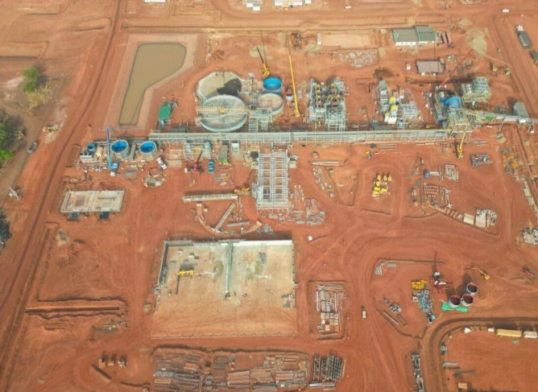
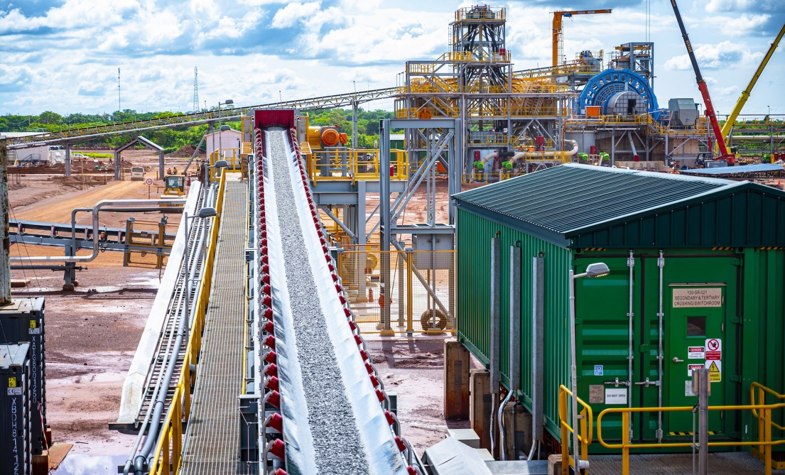
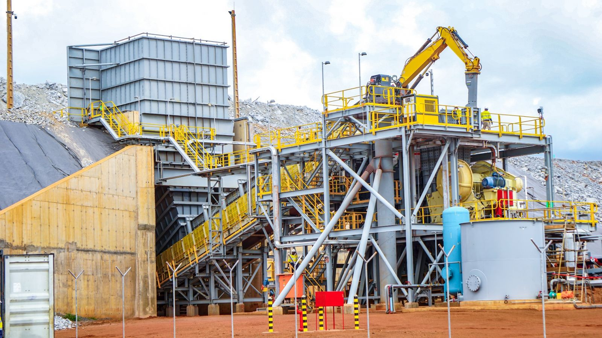
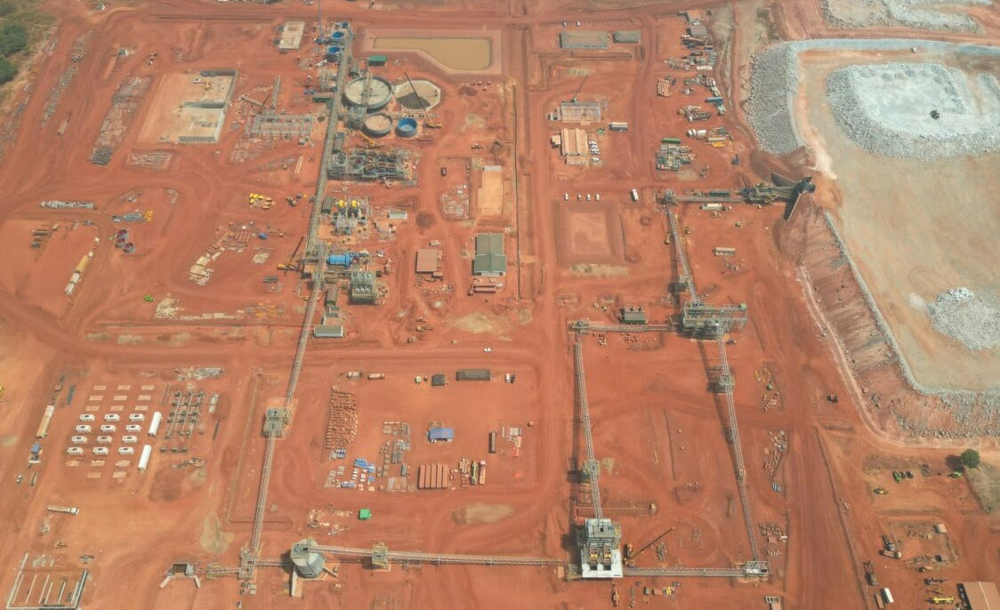
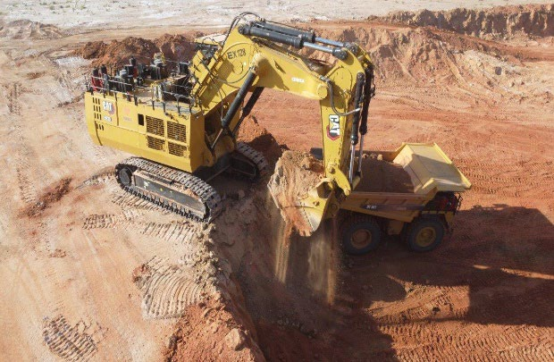
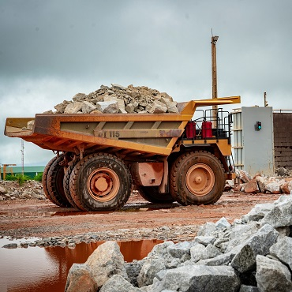
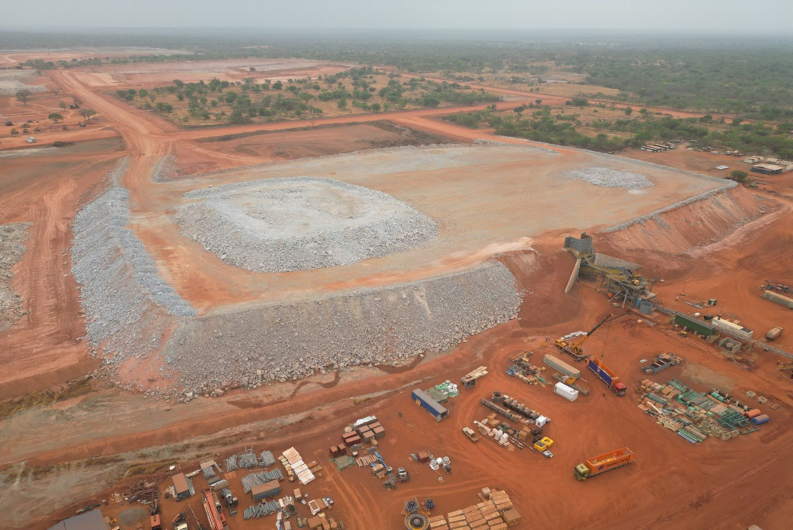
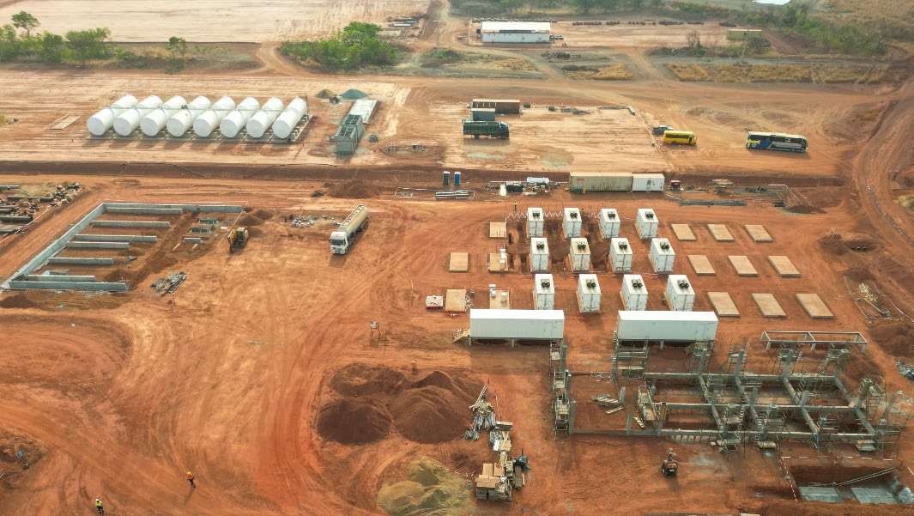

| 产线 | 2026 H1（本期） | 2025 全年（上期） | 对比 / 说明 |
|---|---|---|---|
| 一期（Phase I）选厂 设计 50.6 万吨/年 SC6 |
23.38 万吨精矿（H1） 年化利用率 ≈ 92.4% |
33.66 万吨（全年，干基） 利用率 ≈ 66.5%（含爬产期） |
爬产接近满产：2026 年 1–4 月已产 16.14 万吨（年化 ≈95.7%），H1 维持高位；公司披露「预计 2026 年达成满产」 |
⚠️ 赣锋对 Goulamina 仅披露年度 / 半年度产量，无官方逐季披露，故无法按季度拆分；产量口径为「精矿（干基，SC6 / 6% Li₂O）」。2025 年为首个完整生产年（2024-12-15 投产仪式，当年无商业化产量披露）。
| 产线 | 现状（截至 2026-09-14） | 产能口径 |
|---|---|---|
| 二期（Phase II）扩建 | 「已完成可行性研究工作，正逐步推动二期建设」（赣锋 2026 半年报）；尚无 FID 决定与具体投产时间表披露 | 最新规划：总产能扩至 100 万吨/年（一期 50.6 + 二期约 50 万吨）；DFS Update 2021 旧口径为 83.1 万吨/年 |
口径沿革：2021 DFS Update 二期为 831 ktpa（4.0 Mtpa 原矿吞吐）；2023 年 7 月赣锋—Leo 合作协议将二期目标上调至约 500 ktpa（总产能 1 Mtpa）[源]。资金端：2026-07-30 中非发展基金将 1 亿美元可转债转为 Mali Lithium A 类优先股，强化二期融资[源]。
本期（2026 H1）开工变化因素：一期维持稳定生产，1–6 月共产出 23.38 万吨锂精矿，资源自给与成本结构持续改善；二期可研完成、逐步推动建设。物流端：赣锋 2025 年报强调 Goulamina「克服种种困难，保障物流运输持续安全稳定运行」；2026 年 4 月底马里发生针对首都巴马科等地的多向量袭击（国防部长遇袭身亡），但南部 Bougouni/阿比让走廊锂矿运输维持运行，正常生产未受直接影响。
上期（2025 全年）开工变化因素：一期于 2024-12-15 投产，2025 年为爬产年，全年产出 33.66 万吨（干基）；6 月 24 日首批精矿装船发运回国，标志非洲资源开发由建设转入商业化输出。
未来产量预期：2026 年达成一期满产（50.6 万吨/年）；二期时间表未披露，是 2027 年供给增量的主要上行变量。
| 指标 \ 期间 | 2025 全年 | 2026 1–4 月 | 2026 H1 |
|---|---|---|---|
| 精矿产量（万吨，干基 SC6） | 33.66 | 16.14 | 23.38 |
| 对应年化利用率（vs 50.6 万吨/年） | 66.5% | ≈95.7% | ≈92.4% |
| 披露来源 | 赣锋锂业 2025 年报 / 2026-06-08 投资者关系记录 / 2026 半年度报告（摘要） | ||
注：① Goulamina 官方仅披露年度与半年度产量，无逐季披露，故无法按 2019Q1 起的季度序列呈现（与澳洲各矿不同）。② 2024 年为首产年（12-15 投产仪式），无全年产量披露。③ 图表中 2026 全年为估计值（基于 H1 年化 92.4% 与「2026 年满产」指引，取 ≈48 万吨），以浅色柱标注为估计，非官方数据。
预测依据：一期 50.6 万吨/年名义产能已于 2025 年投产、2026 年接近满产；二期可研完成但无 FID 与投产时间表，故 2027 年基准按一期满产（50.6 万吨），二期贡献仅计入乐观情景。物流（≈1000 km 陆运至阿比让）与安全局势为主要下行风险。
假设条件：① 悲观/基准/乐观均以一期满产为中枢，差别在利用率与二期贡献；② 二期投产时间表官方未披露（「逐步推动建设」），乐观情景隐含二期 2027 年下半年起贡献，为纯上行假设；③ 若二期 FID 落地并提速，供给上限向 100 万吨/年靠拢。 免责：研究性判断，不构成投资建议。
核实方法：以赣锋 2025 年报 / 2026 半年报（权威口径）为锚，交叉 Firefinch DFS Update 2021（工程口径）、LMSA 官网、Lycopodium（EPCM）、第三方（Argus/Mysteel/Gasgoo）与 Mining Data Online。
核实结论摘要：① 一期选厂设计 50.6 万吨/年 SC6（6% Li₂O）——官方多源一致（赣锋 50.6、LMSA 500,000 t、DFS Update 506 kt）；② 精矿品位 6% Li₂O、低铁（<0.6% Fe₂O₃）低云母，官方口径即 SC6，全站无需折算系数；③ 回收率 80%（赣锋闭环试验）；④ 原矿吞吐一期 2.3 Mtpa，二期扩至 4.0 Mtpa（DFS Update 2021）；⑤ 二期总产能口径由 831 ktpa（2021 DFS）上调至 1 Mtpa（2023 合作协议 / 赣锋披露），以最新 1 Mtpa 为准；⑥ 工艺为两段磁选 + 三段浮选（粗/精/再精）+ 精矿脱水过滤。
| 产线 / 项目 | Excel / 页面采用 | 核实结果 | 多来源交叉印证 |
|---|---|---|---|
| 一期精矿产能 | 50.6 万吨/年 SC6 | ✓ 50.6 万吨/年（506 ktpa） |
赣锋2025年报「一期产能 50.6 万吨锂精矿」（PDF 第 50 页）
DFS Update 2021Stage 1 = 506 ktpa
LMSA 官网500,000 t/年
|
| 二期总产能 | 100 万吨/年（总） | 100 万吨/年（最新规划） vs 旧口径 83.1 万吨/年 |
赣锋2026半年报「二期已完成可行性研究…逐步推动建设」；一期 50.6 → 总 100 万吨
Argus 2025-07二期总产能提至 1Mt/yr，时间表未披露
DFS Update 2021Stage 2 = 831 ktpa（4.0 Mtpa）——已更新
|
| 原矿吞吐 | 一期 2.3 Mtpa | ✓ 2.3 → 4.0 Mtpa |
DFS Update 2021Stage 1 2.3 Mtpa → Stage 2 4.0 Mtpa（投产约 18 个月后扩产）
|
| 回收率 | 80% | ✓ 80% |
DFS Update 2021锂回收率增至 80%（赣锋监督试验，原 DFS 77%）
|
| 现金成本 C1 | US$312/t | ✓ US$312/t（LOM） |
DFS Update 2021US$312/t 精矿；AISC US$365/t
Mysteel 2026-01拆分：采矿 $88 + 加工 $112 + 运输 $99
|
来源索引：【赣锋】2025 年报 + 2026 半年报（HKEX/巨潮）；【DFS】Firefinch DFS Update 2021-12-06 + DFS 2020-10-20；【LMSA】lithiumdumali.ml；【第三方】Argus Media、Mysteel、Gasgoo、Mining Data Online。




核实结论摘要：① 露天伟晶岩锂矿（LCT 型），钻爆 + 装载 + 卡车；② 资源量 2.9932 亿吨 @1.33% Li₂O（赣锋 2025 年报 M+I+I，含 Li₂O 399 万吨）——较 Leo 2024-07 MRE（2.672 亿吨 @1.38%）进一步上修；储量 5,200 万吨 @1.51%（DFS 口径）；③ 采矿服务由 Corica Mali 承担（US$3.48 亿合同，物料移动 18–20 Mt/年，含约 6 个月预生产 + 5 年固定期）；④ 环评（ESIA）由 Digby Wells 完成，2019-03 获马里环境许可（马里首个获授权锂矿项目）；⑤ 尾矿库 TSF 为山谷型、下游筑坝，2024 年 3 月完工。
| 矿坑 / 设施 | 建成与规划状态 | 多来源交叉印证 |
|---|---|---|
| 资源量（M+I+I） | 2.9932 亿吨 @1.33% Li₂O | 赣锋2025年报29,932 万吨矿石 / Li₂O 399 万吨 / 品位 1.33%（PDF 第 50 页） Leo 2024-07 MRE267.2 Mt @1.38% Li₂O（ASX） |
| 储量（P+P） | 5,200 万吨 @1.51% Li₂O | DFS Update 202152 Mt @1.51%；矿山寿命 21.5–23 年 |
| 采矿服务 | Corica Mali（露天采矿合同） | SMM / 2024Q1 季报Corica US$3.48 亿合同，18–20 Mt/y 物料移动；2024Q1 季报「Stage 1 Mining Contractor」 |
| 尾矿库 TSF | 山谷型 / 下游筑坝 · 2024-03 完工 | 2024Q1 季报「TSF 于 3 月实现 practical completion，正在建设 decant 设施与排水泵电」 DFS/PFSLand & Marine 设计，下游筑坝 |
| 供水 | Sélingué 大坝 → 29 km 管线 | DFS/PFS + 2024Q1Sélingué 大坝取水，约 25–29 km 管线 + 尾矿回水；2024Q1「overland pipe 接近 ready for service testing」 |
| 电力 / 燃油 | Vivo Power（柴油 + 光伏混合） | 2024Q1 季报「与 Vivo Power 签订供电合同」「燃料库 + 电厂（Image 10）」 |
| 物流 / 出口 | 阿比让港（主）≈1000 km | Mysteel 2026-01往返 6–7 天；SMM「≈1000 km」；Leo 签 10 年阿比让港口协议（SEA-Invest，≥25 万吨/年） |
| 环评 ESIA | 2019-03 环境许可 | Digby Wells2016 初筛 → 2017 ESIA → 2019-03 环境许可（马里首个授权锂矿） |




坐标来源：矿区中心取赣锋/Leo 官方钻探坐标（UTM WGS84 29N，东 613100 / 北 1254800，见 Leo 2024-07 MRE 钻探表），换算为 11.3493, -7.9635；OSM「Goulamina Lithium Mine」节点为 11.3495, -7.9723。二者一致，取前者为锚点。
· 数据口径：产量为「锂精矿（干基，SC6 / 6% Li₂O）」，Goulamina 官方产品即 SC6 级精矿，全站不应用 SC6 折算系数（与澳洲部分矿山需折算不同）。
· 披露粒度：赣锋仅披露年度/半年度产量，无逐季披露，无法按 2019Q1 起季度序列呈现；2026 全年为估计值，已标注。
· 权益口径：产量为 100% 资产口径；经济权益为赣锋 65%（LMSA 层面），马里政府持 35%（10% 免费 + 25% 作价购入）。
· 首船口径差异：赣锋/Gasgoo 以 2025-06-24 为「首批装船发运」；第三方（Altius 权益条款）以 2025-08-08 为「首次商业装运」起算日——两者指同一批货的不同界定节点。
· 图片来源：厂区/采矿/设备图来自 Leo Lithium 2024Q1 官方季报与赣锋锂业官网（2024-10-11 建设报道）、LMSA 官网，均为建设期影像，非当前运营影像；卫星图为 Google Maps 实时嵌入。
· 本页面数据来自赣锋锂业、Leo Lithium、Firefinch 等官方报告及权威媒体，仅供研究参考，不构成投资建议。